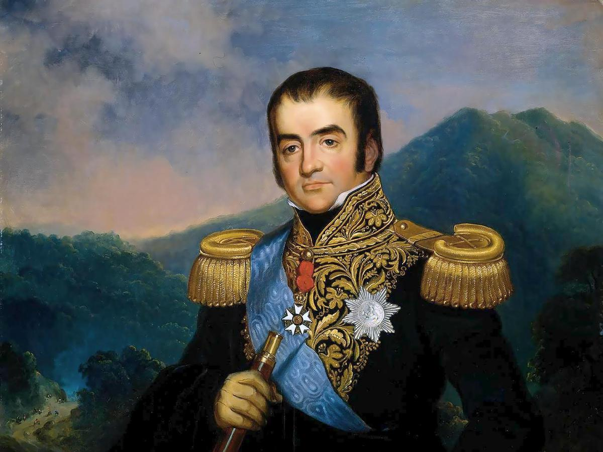

Mr. Herman Willem Daendels adalah seorang politikus Belanda
yang merupakan Gubernur-Jenderal Hindia-Belanda yang ke-36.
Ia memerintah antara tahun 1808 - 1811,
Masa itu Belanda sedang dikuasai oleh Perancis.
Tujuan utamanya adalah melindungi Jawa dari serbuan Inggris
A. Kebijakan Politik
- Membagi Pulau Jawa menjadi 9 residen
- Memangkas kekuasaaan sultan-sultan
B. Kebijakan Pertahanan
-Membangun Jalan Anyer-Panarukan
-Membangun benteng-benteng
-Membangun pabrik senjata
-Membangun pangkalan militer
C. Kebijakan Ekonomi
-Menerapkan kerja rodi
-Menerapkan wajib pajak
-Menerapkan Preangerstelsel